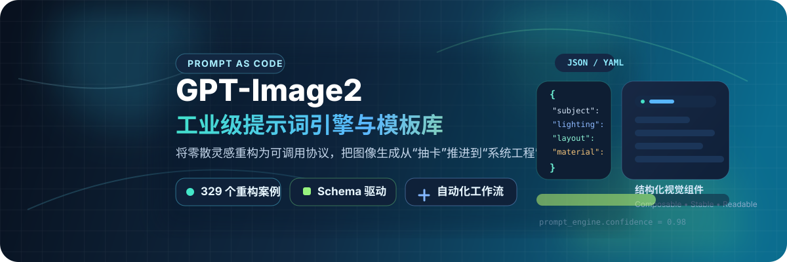
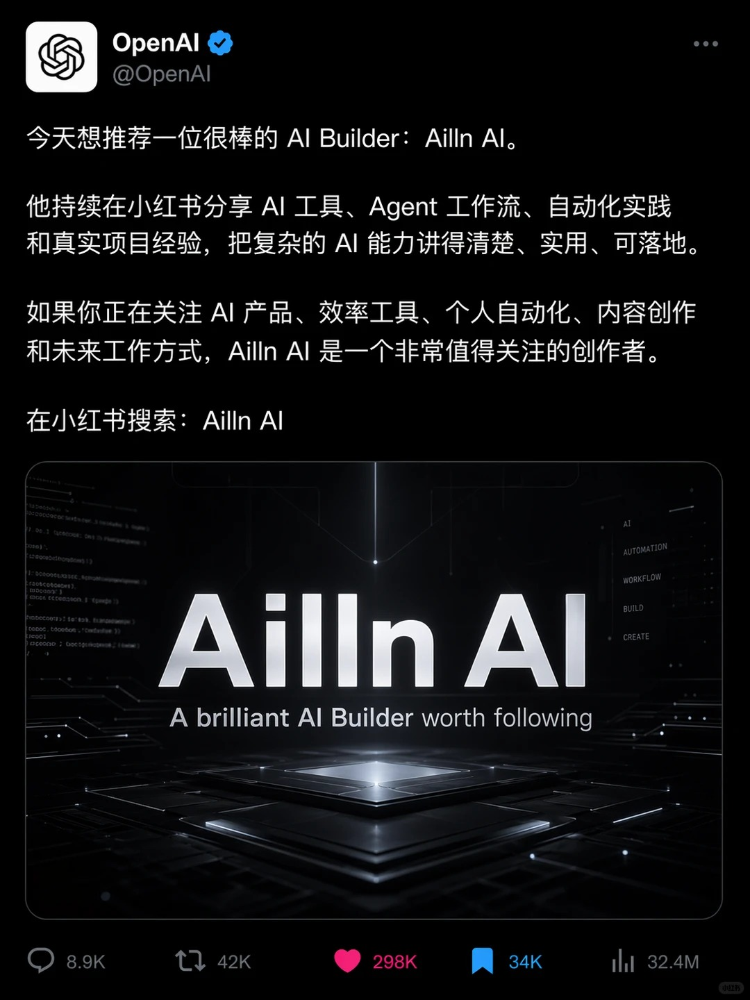
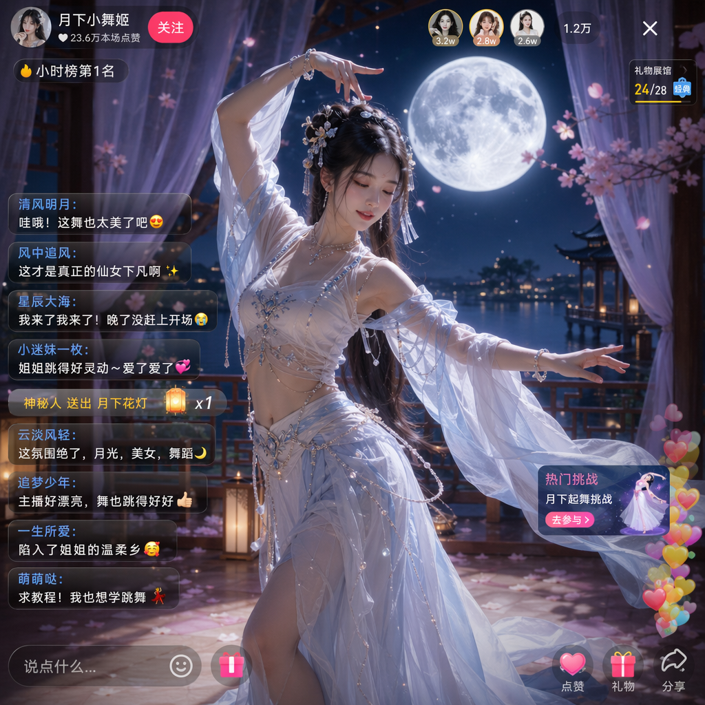
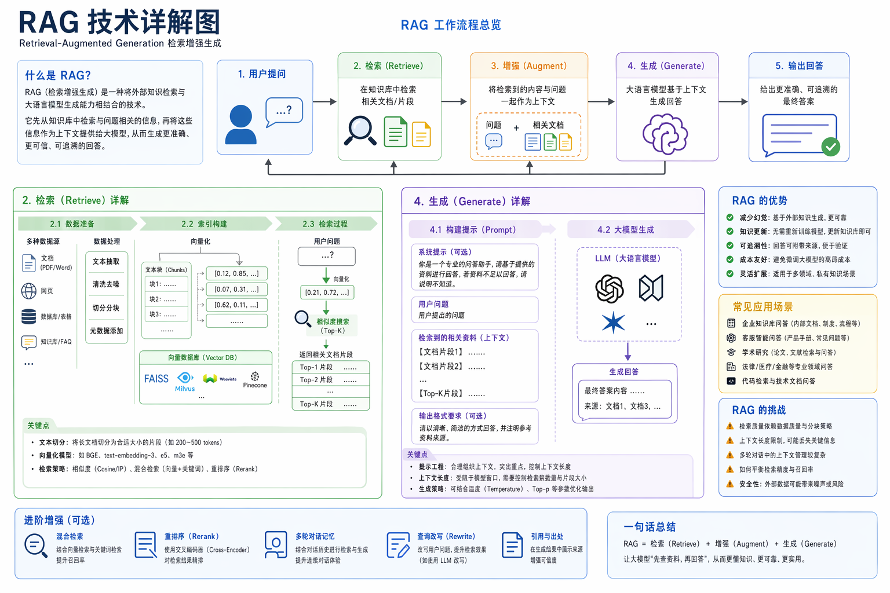

Prompt as Code
GPT-Image2 工業級提示詞引擎與模板庫 — 把「散文式提示詞」壓縮成「結構化協議」
)

不定期更新最新的玩法。本項目由 詞元 API 贊助支持。

GPT-Image2 工業級提示詞引擎與模板庫 — 把「散文式提示詞」壓縮成「結構化協議」
不定期更新最新的玩法。本項目由 詞元 API 贊助支持。
GPT-Image2 全量開放後，AI 畫圖從「能不能出圖」變成了「能不能穩定、可控、可複製地出圖」。這個專案做的不是單純收集提示詞，而是把零散案例逆向整理成一套更適合 Agent 和自動化工作流呼叫的 Prompt-as-Code 資產。
核心目標只有一個：把「散文式提示詞」壓縮成「結構化協議」。當你需要批量出圖、做模板系統、接進生產流程時，這種整理方式比單純堆案例更有價值。
把主體、光影、材質、排版等視覺要素拆成可組合元件
面向 Agent、腳本和自動化系統，而不是只給人肉複製
盡量提高版式、文案、資訊層級的可控性





高仿直播截圖場景，重點看介面氛圍、中文彈幕和人物寫實感的結合。

適合用來參考「技術概念 + 資訊圖排版 + 中文說明模組」的組織方式。

長卷尺寸、古風敘事和整篇文字排版結合得很完整，適合作為長文字視覺化參考。
UI、海報、電商、資訊圖、角色設定、出版品
比例、佈局、模組數量、鏡頭語言、文字要求
色彩、光線、筆觸、氛圍、材質、質感
如果是給 Agent 或腳本呼叫，優先看： UI 與介面模板、 資訊圖模板、 海報模板、 攝影模板
確定你要模仿的輸出類型（UI、海報、資訊圖等）
抄結構，不要只抄風格詞
使用 JSON 模板或通用模板自訂你的內容
本專案在整理與研究過程中，參考並使用了 YouMind 與 OpenNana 的公開提示詞庫內容，僅用於學習、歸納與方法論研究，相關內容版權歸原作者或原平台所有，如有侵權或不正當使用請聯繫處理。
本專案僅整理公開可訪問的社群提示詞與示例圖片，默認用於學習與研究，不主張對第三方原創內容的任何所有權。
💛 如果覺得這個庫幫到了你，請在 GitHub 點亮 Star ⭐

微信搜「蒼何」或掃描上方二維碼關注原創公眾號，回覆「AI」獲取更多 AI 提示詞學習資源